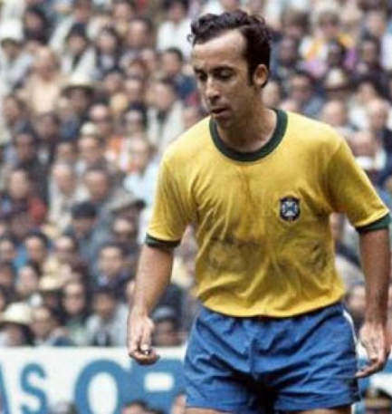
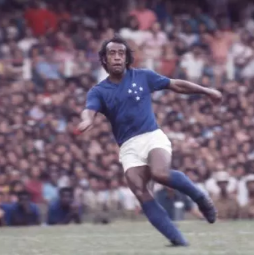
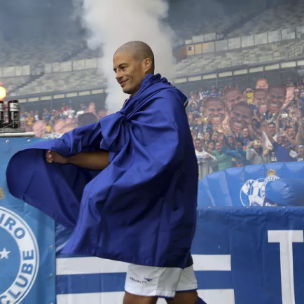
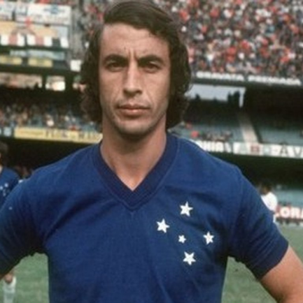

Cruzeiro
Primeiro escudo do clube. O Cruzeiro foi fundado no dia 2 de janeiro de 1921, por desportistas da colônia italiana de Belo Horizonte, com o nome de Societá Sportiva Palestra Itália. As cores adotadas, como não poderia deixar de ser, foram as mesmas da bandeira italiana: verde, vermelho e branco
Títulos
Campeonato Brasileiro: 4
Copa do Brasil: 6
Campeonato Mineiro: 38
Libertadores: 2

Ídolos
- 
- 
- 
- 
Tostão
É o maior artilheiro, craque, nome e ídolo da história do Cruzeiro. Além de vários títulos - incluindo um Brasileirão e a magnífica vitória sobre o Santos de Pelé -, glórias, gols e lances mágicos e espetaculares pela Raposa, Tostão foi genial na conquista do tri no México, com a extraordinária Seleção Brasileira de 70
Dirceu Lopes
Segundo maior artilheiro da história do Cruzeiro, Dirceu Lopes era um gênio. Craque extraordinário, não jogou tantas vezes pela Seleção quanto deveria, mas é um dos grandes da história do futebol brasileiro. Além de inúmeras mágicas com lances fantásticos e de pura fantasia, o Príncipe marcou mais de 200 gols e ganhou uma infinidade de títulos pelo Cruzeiro, incluindo um Brasileiro e uma Libertadores, além de ser eleito o melhor meia do Brasileiro em 70, 71 e 73, ganhando a Bola de Prata, e o melhor do País em 71, com a Bola de Ouro
Alex
A tríplice coroa em 2003 mais o Mineiro de 2004. Alex não ganhou tantos títulos quanto outros, mas foi o comandante genial e um dos grandes responsáveis (o maior, na opinião de muitos) por um dos anos mais incríveis da história do Cruzeiro. Craque, dispensa muitos comentários. Era um gênio que faz falta ao futebol e, assim como Dirceu Lopes, poderia ter jogado mais pela Seleção
Piazza
Este é outro nome inquestionável e extraordinário. Volante que também jogava como zagueiro, foi tricampeão com a mágica Seleção de 1970 e era craque. Nome obrigatório em qualquer seleção do Cruzeiro, mineira e um dos maiores jogadores da história do futebol brasileiro, ganhou vários títulos e é um dos maiores ídolos da história da Raposa
Minerão
O Mineirão foi inaugurado em 5 de setembro de 1965 e elevou o patamar do futebol mineiro. Com a inauguração do Gigante com capacidade para 130 mil torcedores, os clubes da capital começaram a enfrentar de igual para igual os clubes do Rio de Janeiro e São Paulo. Palco de partidas inesquecíveis e títulos históricos, o Mineirão foi totalmente reformado para a Copa das Confederações/2013 e Copa do Mundo 2014. O estádio foi palco de três partidas do evento teste da FIFA e sediou seis jogos da Copa do Mundo, inclusive uma das semifinais